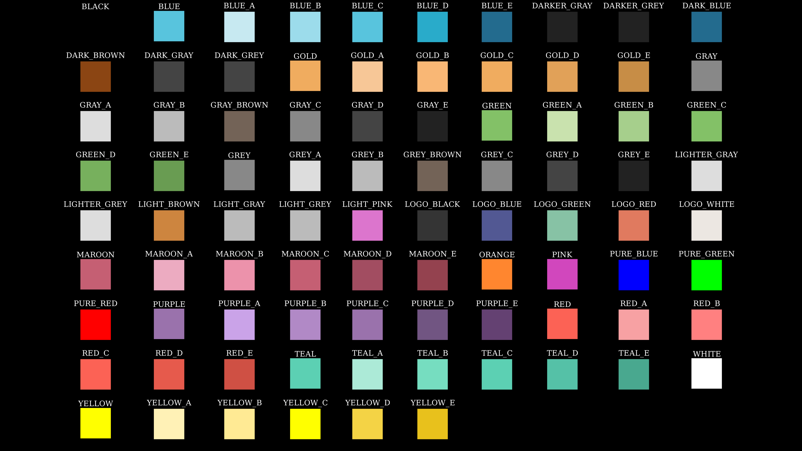

Manim学习笔记
Table of Contents
警告！这只是一篇笔记！一篇笔记！非入门教程！默认具有一定python基础
系统环境：Arch Linux
更新时间：2025-08-01
顺带一提：使用manimCE的建议看最后Reference里面最后一个链接里的官方教程
1. Manim的安装
5202年了，manim的安装仍旧让人非常想吐槽。arch或许还好还有aur，但是aur上的包都是使用github的链接，下载奇慢，还可能时不时出现一些编译问题。下面开始正文
下面是我安装manimce的几种方案：
1.1. 使用pipx的方案
好处：
- 简单快捷
坏处：
- 仅限单用户
- 需要配置下ide以实现自动补全（但我没试过，故不给出方案）
# 确保系统完整且具有gcc等工具，texlive选装 sudo pacman -S base base-devel ffmpeg texlive # python环境设置 sudo pacman -S python python-pip python-pipx # 设置镜像 pip config set global.index-url "https://pypi.tuna.tsinghua.edu.cn/simple" # 安装ManimCE(manimgl是3b1b个人版本) pipx install manim
1.2. 使用 makepkg 的方案
由于该方案是使用archlinux的
makepkg+python的python-build+python-installer将所有的manim依赖打包在一起，所以：
- 非archlinux不可用
- 可能会造成混乱（因为其他依赖包不是独立打包的，没有独立的版本管理，版本升级不方便）
- 如果有软件包洁癖勿入，因为它不是标准包，打包了很多个python库
优点：
- 对懒癌友好(相较于aur的manim的一堆从github下载的依赖包)
- 设置了pip镜像后对国内用户友好(不用等yay一个一个地从github上下东西)
- 将manim打包后系统级安装，直接用自动补全
# 最好在运行前设置pip镜像 pip config set global.index-url "https://pypi.tuna.tsinghua.edu.cn/simple"
请确保/etc/pacman.conf中启用了archlinuxcn库，如若没有在其中添加以下内容以设置
[archlinuxcn] Server = https://mirrors.tuna.tsinghua.edu.cn/archlinuxcn/$arch
然后从
这里下载PKGBUILD文件存到某个目录，然后在那个目录下运行 makepkg -s 就可以了(不会到了这步还不会吧？罚你去看archwiki)
1.3. 从aur安装(不推荐)
众所周知，aur上的包大多默认从github上下载，就算是挂了代理一般也很慢。并且吧，经过我多次被aur上的manim包坑的经历后，被搞怕了好吧。
当然，也不是没有解决办法。如果安装软件出现问题可以去对应包的aur界面看看评论，评论区有高手会提出问题并解决的
目前(2025.08.01)已知包缺少依赖：
- python-beautifulsoup4
- python-av
1.4. 直接pip安装(非常不推荐)
过程类似pipx，不多讲，主要是我也不想这样干，已知问题见下面
由于比较长所以藏里面了，点击展开查看
1. externally-managed-environment: pip与包管理器冲突 1. 解决办法： =sudo mv /usr/lib/python3.13/EXTERNALLY-MANAGED /usr/lib/python3.13/EXTERNALLY-MANAGED.bk= 2. manim直接pip安装问题(build问题)，以下为所有需安装包 1. manim 2. pillow 3. Pygments 4. audioop-lts 5. av >= 6. beautifulsoup4 1. soupsieve 7. click 8. =cloup= 9. decorator 10. isosurfaces 11. manimpango 12. mapbox-earcut 13. moderngl 1. glcontext 14. moderngl-window 1. pyglet 2. pyglm ? 15. networkx 16. numpy 17. pycairo 1. Err: cc/gcc/clang/nvc/pgcc/icc/icx no found -> install base-devel(gcc) 1. Err: if gcc only: Pkg-config for machine host machine not found. -> install pkg-config 1. if then only: RequiredDependencyException: pangocairo >= 1.30.0 is required -> install ffmpeg(included cairo and pango(required by librsvg)) 18. =pydub= 19. rich 1. markdown-it-py 1. mdurl 20. scipy 21. screeninfo 22. skia-pathops 23. srt 24. svgelements 25. tqdm 26. typing-extensions 27. watchdog 3. pip config迁移: .pip/pip.conf => .config/pip/pip.conf 1. 解决办法： =pip config set global.index-url "https://pypi.tuna.tsinghua.edu.cn/simple"= 更多内容[[https://www.yaolong.net/article/pip-externally-managed-environment/][详见这里]]。
1.5. DLC:在termux上安装manim
附赠几条提示：
- 能够用pkg的尽量用pkg装，尽可能避免所有的编译问题(或许是因为由于架构问题经常会有包会傻乎乎地本地编译，浪费半天不说还会在最后给你弹出来个报错。例如说因为缺 cmake ninja等各种奇怪的编译依赖报错。
- 由于未知原因，要把
~/../lib/设置为可读写操作状态才能够正常安装 - 仔细看报错
2. Manim基础知识
2.1. 基本格式与渲染参数
一个基本manim程序范例：
from manim import * class example_class(Scene): def construct(self): pass
然后在命令行执行以下格式的命令渲染：
manim -ql path/to/file.py example_class # 即:manim [参数] 文件.py [<你定义的类名>(类名可以省略(单个默认，多个询问))]
-q?用于指定输出质量，对应如下:
| 参数 | 输出规格 | 含义 |
|---|---|---|
| -ql | 854x480 15fps | low(480p) |
| -qm | 1280x730 30fps | medium(720p) |
| -qh | 1920x1080 60fps | high(1080p) |
| -qp | 2560x1440 60fps | 2k |
| -qk | 3840x2160 60fps | 4k |
-p在渲染完成后预览结果
2.2. 词义理解
- 空间方位 由
[x,y,z]三位数组构成，一般略去问题不大。坐标可由方向常量（看下表）、已存在的对象以及三位数组提供（在函数间传递参数的时候）。一般而言省略掉z 坐标问题不大。- x轴横于画面，y轴纵于画面，z轴垂直于画面。
IN代表垂直并向着屏幕方向，OUT则相反
- 对象 一般指manim定义的那堆大写开头的可被添加到屏幕的类
- 方法 一般指对象（类）的内部的函数，在manim中方法一般默认返回self，也就是说实际上可以在执行完一个方法后套上另外一个方法，如
a.b().c().e()这样 - 通用方法命名规律 用于找出想要的方法
get_XXX获取对象的属性set_XXX设置对象的属性
- 属性 对象的属性（如颜色字体大小位置等）
- 常见英语词汇翻译
原词 意思 buff 缓冲，抵达预设位置前预留的空间 opacity 透明度 about_point 旋转等操作的中心点 vertices 顶点 axis 轴
3. Manim手册
3.1. 常量速查
- 方位：本质为一个三维坐标（数组）
UL UP UR | OUT 屏幕外面 LEFT ORIGION RIGHT | (z轴) ---------- DL DOWN DR | IN 屏幕内侧
组合方式： 使用
+号相加 - 角度
DEGREES角度制(PI/180) |PI弧度制 |TAU周角(2*PI) - 颜色
BLACK BLUE GOLD GRAY GREEN GREY ORANGE PINK PURPLE RED WHITE YELLOW

Figure 1: manim中各种颜色
生成上图的代码
#!/usr/bin/env manim -pqh -s from manim import * class Color(Scene): def construct(self): # plane = NumberPlane() # self.add(plane) colors = dir(color.manim_colors)[:-11] colors.remove("ManimColor") boxs = VGroup() for i in colors: group = VGroup() col = color.manim_colors.__dict__[i] box = Rectangle(width=0.5, height=0.5, color=col, fill_opacity=1) text = Text(i).scale(0.2).next_to(box, UP*0.2) group.add(box, text) boxs.add(group) boxs.arrange_in_grid(buff=0.2) self.add(boxs)
3.2. 对象及其特异性方法一览
内容来自ManimCE手册，英语好的直接看定义知参数
"""注：`#`注释部分的括号内为其父对象""" # 组(VMobject) class VGroup(*vmobjects, **kwargs) """可以通过VGroup(xxx, xxx, ...)、VGroup.add(xxx)、VGroup()+=XXX等方式添加对象 可以通过VGroup()[num]对某个顺序位置的对象进行访问 其内部的对象实际上是种指针，组内组外都能访问控制""" # 线(TipableVMobject) class Line(start=array([-1., 0., 0.]), end=array([1., 0., 0.]), buff=0, path_arc=None, **kwargs) # 虚线(Line) class DashLine(*args, dash_length=0.05, dashed_ratio=0.5, **kwargs) # 两条线夹角的标记弧线(VMobjects) class Angle(line1, line2, radius=None, quadrant=(1, 1), other_angle=False, dot=False, dot_radius=None, dot_distance=0.55, dot_color=ManimColor('#FFFFFF'), elbow=False, **kwargs) # 矩形(RegularPolygon) class Rectangle(color=ManimColor('#FFFFFF'), height=2.0, width=4.0, grid_xstep=None, grid_ystep=None, mark_paths_closed=True, close_new_points=True, **kwargs) # 正三角形(RegularPolygon) class Triangle(**kwargs) # 开放型多边形(VMobject) class Polygram(*vertex_groups, color=ManimColor('#58C4DD'), **kwargs) # 闭合型多边形(特殊的Polygram) class Polygon(*vertices, **kwargs) # 圆形(Arc) class Circle(radius=None, color=ManimColor('#FC6255'), **kwargs): # 让圆的圆心对齐已有元素 def surround(mobject, dim_to_match=0, stretch=False, buffer_factor=1.2) # 椭圆(Circle) class Ellipse(width=2, height=1, **kwargs) # 点(Circle) class Dot(point=array([0., 0., 0.]), radius=0.08, stroke_width=0, fill_opacity=1.0, color=ManimColor('#FFFFFF'), **kwargs) # 箭头(Line) class Arrow(*args, stroke_width=6, buff=0.25, max_tip_length_to_length_ratio=0.25, max_stroke_width_to_length_ratio=5, **kwargs) """如果不设置buff=0就会造成箭头的始末位置有偏差的问题""" # 曲箭头(ArcBetweenPoints) class CurvedArrow(start_point, end_point, **kwargs) # 坐标轴(VGroup, CoordinateSystem) class Axes(x_range=None, y_range=None, x_length=12, y_length=6, axis_config=None, x_axis_config=None, y_axis_config=None, tips=True, **kwargs): # 坐标轴绘图，返回的是一个对象，与Axes对象无直接联系 def plot(function, x_range=None, use_vectorized=False, colorscale=None, colorscale_axis=1, **kwargs) # Returns a `Polygon` representing the area under the graph passed. def get_area(graph, x_range=None, color=(ManimColor('#58C4DD'), ManimColor('#83C167')), opacity=0.3, bounded_graph=None, **kwargs) # 网格，可用于定位、查看画布大小等(Axes) class NumberPlane(x_range=(-7.111111111111111, 7.111111111111111, 1), y_range=(-4.0, 4.0, 1), x_length=None, y_length=None, background_line_style=None, faded_line_style=None, faded_line_ratio=1, make_smooth_after_applying_functions=True, **kwargs) # 文本(SVGMobject) class Text(text, fill_opacity=1.0, stroke_width=0, *, color=ManimColor('#FFFFFF'), font_size=48, line_spacing=-1, font='', slant='NORMAL', weight='NORMAL', t2c=None, t2f=None, t2g=None, t2s=None, t2w=None, gradient=None, tab_width=4, warn_missing_font=True, height=None, width=None, should_center=True, disable_ligatures=False, use_svg_cache=False, **kwargs) # 数学公式(SingleStringMathTex) class MathTex(*tex_strings, arg_separator=' ', substrings_to_isolate=None, tex_to_color_map=None, tex_environment='align*', **kwargs) # latex渲染文本(Mathtex) class Tex(*tex_strings, arg_separator='', tex_environment='center', **kwargs) """由于文字使用Latex渲染，渲染中文时可能会报错，所以要在后面加上参数变成 Tex("Strings", ..., tex_template=TexTemplateLibrary.ctex) 以渲染中文""" # 文字加分割线组成的标题(Tex) class Title(*text_parts, include_underline=True, match_underline_width_to_text=False, underline_buff=0.25, **kwargs) # 图片(AbstractImageMobject) class ImageMobject(filename_or_array, scale_to_resolution=1080, invert=False, image_mode='RGBA', **kwargs)
稍微没有那么常见的对象
# 矢量化的对象，是一堆对象的父对象，大多数对象的通用属性来源(Mobject) class VMobject(\ fill_color=None, fill_opacity=0.0, \ stroke_color=None, stroke_opacity=1.0, stroke_width=4, \ background_stroke_color=ManimColor('#000000'), \ background_stroke_opacity=1.0, \ background_stroke_width=0, \ sheen_factor=0.0, \ joint_type=None, \ sheen_direction=array([-1., 1., 0.]), \ close_new_points=False, \ pre_function_handle_to_anchor_scale_factor=0.01, \ make_smooth_after_applying_functions=False, \ background_image=None, \ shade_in_3d=False, \ tolerance_for_point_equality=1e-06, \ n_points_per_cubic_curve=4, \ cap_style=CapStyleType.AUTO, \ ,**kwargs) # 可以显示在屏幕上对象的基类 class Mobject(color=ManimColor('#FFFFFF'), name=None, dim=3, target=None, z_index=0)
3.3. 广泛通用属性一览
- 颜色家族(color)：
colorfill_colorstroke_color- 颜色属性可以直接修改设置没有问题
- 透明度家族(opacity)
stroke_opacityfill_opacity- 透明度不能够通过设置属性更改，需要使用
set_opacity更改，若需要分别修改则需要使用set_fill和set_stroke方法在参数里指定
- 透明度不能够通过设置属性更改，需要使用
- 大小家族：
heightwidthradiusfont_size- 前两个直接修改属性比例不变，半径修改无用，字体大小可用
3.4. 广泛通用方法一览
# Add mobjects as submobjects. def add(*mobjects) # 复制自身，包括所有子对象 def copy() # ================================================== """`set`开头的方法用于设置属性""" # 设置指定的属性 def set(**kwargs) # 设置位置 def set_x(x, direction=array([0., 0., 0.])) def set_y(y, direction=array([0., 0., 0.])) def set_z(z, direction=array([0., 0., 0.])) # 设置z轴同层显示优先级 def set_z_index(z_index_value, family=True) # 设置对象颜色（边框和填充） def set_color(color, ...) # ====以上set*可在Mobject类中找到==== # 设置填充 def set_fill(color=None, opacity=None, family=True) # 设置对象边框颜色 def set_stroke(color=None, width=None, opacity=None, background=False, family=True) # ================================================== """`get`开头的方法用于获取属性""" # 获取对象碰撞箱（将对象完整包裹的正方形）底部坐标 def get_bottom() # 获取对象碰撞箱顶部坐标 def get_top() # 获取对象碰撞箱左边坐标 def get_left() # 获取对象碰撞箱右边坐标 def get_right() # 获取对象碰撞箱中心坐标 def get_center() def get_x(direction=array([0., 0., 0.])) def get_y(direction=array([0., 0., 0.])) def get_z(direction=array([0., 0., 0.])) # 获取颜色 def get_color() # Returns the point, where the stroke that surrounds the Mobject starts def get_start() # Returns the point, where the stroke that surrounds the Mobject ends. def get_end() # Get corner Point3Ds for certain direction. def get_corner(direction) # ================================================== """`has`开头的方法用于检查属性""" def has_points() def has_no_points() # ================================================== # 移动与形态变化 """这里有相当多的方法可以使用 =object.animate.XXX= 的形式动画化 （需要传到play()里）不过这种方法得到的结果往往是对前后结果的插帧补全， 并非是“有特定运动路径的动画”。例如说这样使用的rotate就不是旋转动画 所以说这样的效果更像ApplyMethod()""" # 缩放 def scale(scale_factor, scale_stroke=False, **kwargs) # 旋转 def rotate(angle, axis=array([0., 0., 1.]), about_point=None, **kwargs) """使用`about_point`可以实现绕点旋转 使用`axis`可以指定旋转轴（向量形式），选择形式遵从右手螺旋定则 右手拇指为转轴方向，弯曲四指其方向为旋转正方向（所以默认方向才是`OUT`）""" # 以绝对位置移动（以坐标轴中心定位） def move_to(point_or_mobject, aligned_edge=array([0., 0., 0.]), coor_mask=array([1, 1, 1])) # 以相对位置移动（以对象当前位置定位），参数同上 def shift(*vectors) # 以已有对象位置定位 +（上面的好像也可以）+ def next_to(mobject_or_point, direction=array([1., 0., 0.]), buff=0.25, aligned_edge=array([0., 0., 0.]), submobject_to_align=None, index_of_submobject_to_align=None, coor_mask=array([1, 1, 1])) # 在指定方向上对齐某个已知对象 def align_to(mobject_or_point, direction=array([0., 0., 0.])) # 移动到屏幕角落 def to_corner(corner=array([-1., -1., 0.]), buff=0.5) # 贴着屏幕边缘 def to_edge(edge=array([-1., 0., 0.]), buff=0.5) # 移动至屏幕中央 def center() # 可以将组内对象呈一条线型排列 def arrange(direction=array([1., 0., 0.]), buff=0.25, center=True, **kwargs) # 可以将组内对象呈网格型排列 def arrange_in_grid(rows=None, cols=None, buff=0.25, cell_alignment=array([0., 0., 0.]), row_alignments=None, col_alignments=None, row_heights=None, col_widths=None, flow_order='rd', **kwargs)
3.5. 屏幕方法一览
class Scene(renderer=None, camera_class=<class 'manim.camera.camera.Camera'>, always_update_mobjects=False, random_seed=None, skip_animations=False): # 添加对象 def add(*mobjects) # 移除对象 def remove(*mobjects) # 清除屏幕 def clear() # 替换（可将子物体偷梁换柱） def replace(old_mobject, new_mobject) # 暂停，画面静止保持等待 def wait(duration=1.0, stop_condition=None, frozen_frame=None) # wait()的别名 def pause(duration=1.0) # 播放动画 def play(*args, subcaption=None, subcaption_duration=None, subcaption_offset=0, **kwargs)
3.6. 动画方法一览
# 动画(object) class Animation(mobject=None, lag_ratio=..., run_time=..., rate_func=smooth, ..., **kwargs) """ lag_ratio :动画逐步应用到子对象的延迟，为0表示动画同步进行 run_time :动画总时间 rate_func :动画速度曲线""" # 添加对象，效果同Scene.add()，但用于和其他动画并列(Animation) class Add(mobject=None, **kwargs) # 暂停(Animation) class Wait(runtime=1, stop_condition=None, frozen_frame=None, rate_func=linear, **kwargs) # 将对象所有数据转换成目标对象数据(Animation) class Transform(mobject=None, target_mobject=None, path_func=None, path_arc=OUT, path_arc_centers=None, replace_mobject_with_target_in_scene=False, **kwargs) # 将对象偷梁换柱(Transform) class ReplacementTransform(mobject, target_mobject) # 用插帧将指定的非动画方法动画化(Transform) class ApplyMethod(method, *args) # 旋转动画(Transform) class Rotate(mobject, angle=PI, axis=OUT, about_point=None, about_edge=None, **kwargs) """--mobject 旋转对象 --angle 旋转角度 --axis 转轴 --about_point 旋转点 --about_edge 若无指定旋转点，则使用指定方向的碰撞箱边界作转点 """ # 转一圈(Animation) class Rotating(mobject, axis=OUT, radians=TAU, about_point=None, about_edge=None, run_time=5, rate_func=linear, **kwargs) # =========淡入淡出式========= # 淡入(_Fade) class FadeIn(mobject) # 淡出(_Fade) class FadeOut(mobject) # =========创造式========= # 增量显示对象(ShowPatial) class Create(mobject, lag_ratio, introducer=True) # Create的逆过程(Create) class Uncreate(mobject, reverse_rate_functio=True, remover=True) # 模拟手绘对象(DrawBorderThenFill) class Write(vmobject, rate_func=linear, reverse=False) """与Creat区别于是先绘制边框再上色 reverse: 是否从右到左书写""" # Write的逆过程(Write) class Unwrite(vmobject, rate_func=linear, reverse=True) # =========放大生长式========= # 通过从一个点开始生长来引入一个对象(Transform) class GrowFromPoint(mobject, point, point_color=None, **kwargs) """point_color:长大前的颜色""" # 从中心放大进入一个对象(GrowFromPoint) class GrowFromCenter(mobject, point_color=None, **kwargs) # 从边缘放大进入一个对象(GrowFromPoint) class GrowFromEdge(mobject, edge, point_color=None, **kwargs) # 从边缘放大进入一个箭头(GrowFromPoint) class GrowFromPoint(arrow, point_color=None, **kwargs) # 从0放大并伴有完美的黄金螺旋一个对象(GrowFromCenter) class SpinInFromNothing(mobject, angle=PI/2, point_color=None, **kwargs) # =========强调========= # 圈一圈(Succession) class Circumscribe(mobject, shape=Rectangle, fade_in=False, fade_out=False, time_width=0.3, buff=SMALL_BUFF, color=YELLOW, run_time=1, stroke_width=DEFAULT_STROKE_WIDTH) """shape: [Rectangle|Circle]二选一""" # 浪一浪(Homotopy) class ApplyWave(mobject, direction=UP, amplitude=0.2, wave_func=smmooth, time_width=1, ripples=1, run_time=2) # 摇一摇(Animation) class Wiggle(mobject, scale_value=1.1, rotation_angle=0.001*TAU, n_wiggles=0, scale_about_point=None, rotation_about_point=None, run_time=2) # 闪一闪(Succession) class Blink(mobject, time_on=0.5, time_off=0.5, blinks=1, hide_at_end=False) # 每帧只显示对象的一小部分（结合copy实现强调）(ShowPatial) class ShowPassingFlash(mobject, time_width=0.1) # 放烟花/发光(AnimationGroup) class Flash(point, line_length=0.2, num_lines=12, flash_radius=0.1, line_stroke_width=3, color=YELLOW, time_width=1, run_time=1) # 变色放大后再恢复(Transform) class Indicate(mobject, scale_factor=1.2, color=YELLOW, rate_func=there_and_back) # 亮度遮罩(Transform) class FocusOn(focus_point, opacity=0.2, color=GREY, run_time=2)
3.7. 示例
我的抄的实例
#!/bin/python from manim import * class SquareToCircle(Scene): def construct(self): circle = Circle() circle.set_fill(PINK, opacity=0.5) square = Square() square.set_fill(BLUE, opacity=0.5) square.flip(RIGHT) square.rotate(-3 * TAU / 8) self.play(Create(square)) self.play(Transform(square, circle)) self.play(FadeOut(square)) class mkCircle(Scene): def construct(self): circle = Circle() circle.set_fill(PINK, opacity=0.5) square = Square() square.set_fill(BLUE, opacity=0.5) square.next_to(circle, RIGHT, buff=0.5) self.play(Create(square), Create(circle)) class AnimatedSquareToCircle(Scene): def construct(self): circle = Circle() # create a circle square = Square() # create a square self.play(Create(square)) # show the square on screen self.play(square.animate.rotate(PI / 4)) # rotate the square self.play( ReplacementTransform(square, circle) ) # transform the square into a circle self.play( circle.animate.set_fill(PINK, opacity=0.5) ) # color the circle on screen class OpeningManim(Scene): def construct(self): title = Tex(r"This is some \LaTeX") basel = MathTex(r"\sum_{n=1}^\infty \frac{1}{n^2} = \frac{\pi^2}{6}") VGroup(title, basel).arrange(DOWN) self.play( Write(title), FadeIn(basel, shift=DOWN), ) self.wait() transform_title = Tex("That was a transform") transform_title.to_corner(UP + LEFT) self.play( Transform(title, transform_title), LaggedStart(*(FadeOut(obj, shift=DOWN) for obj in basel)), ) self.wait() grid = NumberPlane() grid_title = Tex("This is a grid", font_size=72) grid_title.move_to(transform_title) self.add(grid, grid_title) # Make sure title is on top of grid self.play( FadeOut(title), FadeIn(grid_title, shift=UP), Create(grid, run_time=3, lag_ratio=0.1), ) self.wait() grid_transform_title = Tex( r"That was a non-linear function \\ applied to the grid", ) grid_transform_title.move_to(grid_title, UL) grid.prepare_for_nonlinear_transform() self.play( grid.animate.apply_function( lambda p: p + np.array( [ np.sin(p[1]), np.sin(p[0]), 0, ], ), ), run_time=3, ) self.wait() class test(Scene): def construct(self): text = Tex(r"TEXT") self.play(Create(text)) self.wait() class test2(Scene): def construct(self): text = Tex(r"中文渲染测试", tex_template=TexTemplateLibrary.ctex) text2 = Tex(r"这是第二段测试文字", tex_template=TexTemplateLibrary.ctex) text2.move_to(DOWN) self.play(Create(text)) self.play(FadeIn(text2, shift=UP)) self.wait() class DifferentRotations(Scene): def construct(self): left_square = Square(color=BLUE, fill_opacity=0.7).shift(2 * LEFT) right_square = Square(color=GREEN, fill_opacity=0.7).shift(2 * RIGHT) self.play( left_square.animate.rotate(PI), Rotate(right_square, angle=PI), run_time=2 ) self.wait() class Shapes(Scene): def construct(self): circle = Circle() square = Square() triangle = Triangle() circle.shift(LEFT) square.shift(UP) triangle.shift(RIGHT) self.add(circle, square, triangle) self.wait(1) class MoreShapes(Scene): # A few more simple shapes # 2.7 version runs in 3.7 without any changes # Note: I fixed my 'play command not found' issue by installing sox def construct(self): circle = Circle(color=PURPLE_A) square = Square(fill_color=GOLD_B, fill_opacity=1, color=GOLD_A) square.move_to(UP+LEFT) circle.surround(square) rectangle = Rectangle(height=2, width=3) ellipse = Ellipse(width=3, height=1, color=RED) ellipse.shift(2*DOWN+2*RIGHT) pointer = CurvedArrow(2*RIGHT,5*RIGHT,color=MAROON_C) arrow = Arrow(LEFT,UP) arrow.next_to(circle,DOWN+LEFT) rectangle.next_to(arrow,DOWN+LEFT) ring = Annulus(inner_radius=.5, outer_radius=1, color=BLUE) ring.next_to(ellipse, RIGHT) self.add(pointer) self.play(FadeIn(square)) self.play(Rotating(square),FadeIn(circle)) self.play(GrowArrow(arrow)) self.play(GrowFromCenter(rectangle), GrowFromCenter(ellipse), GrowFromCenter(ring))
4. 制作经验
4.1. 一般经验
- 实际上很多复杂的动画都是简单的动画的组合，学习将你要表达的内容拆分成一步一步执行的动画是非常重要的一步
- 其次，阅读源代码是必不可少的，通过对源代码的观察和生成动画的对比分析，就能学到不少东西（例如说新的动画方法之类的）
- 要勇敢去尝试实践，在实践中遇到的困难想想办法，总能够解决的
- 简单了解下Python的语法，这对于简化某些复杂的操作非常的有用（Manim制作动画最大的优势）
4.2. 方法建议
4.2.1. 自定义图形
当你想要制作某一类东西需要大量用到重复的形状时，就可以尝试去编写一种方法去构建它。例如物理的电路图，其中的电源，开关，用电器，电阻，滑动变阻器等等，他们都拥有固定的形状，所以我们可以构建一种新的东西去方便我们创建它们
就以刚刚的物理制作电路图作为例子，我们可以尝试绘制一个电源:
from manim import * class shape(Scene): def construct(self): number_plane = NumberPlane() line_left = Line([-0.15, 0.25, 0], [-0.15, -0.25, 0]) line_right = Line([0.15, 0.5, 0], [0.15, -0.5, 0]) power_source = VGroup(line_left, line_right) self.add(number_plane, power_source)
在上面的例子中，我们创建了两条竖直的左短右长的线段作为电源，并且将其添加到了一个虚拟组里面，我们便得到了一个可用的电源，并且可以通过控制虚拟组控制它。
但是，这样一来，我们要添加一个电源就需要写两行代码，容易出错且不易读。怎么办呢? 我们有一个绝佳的办法:定义函数
from manim import * def PowerSource(): line_left = Line([-0.15, 0.25, 0], [-0.15, -0.25, 0]) line_right = Line([0.15, 0.5, 0], [0.15, -0.5, 0]) power_source = VGroup(line_left, line_right) return power_source class shape(Scene): def construct(self): number_plane = NumberPlane() power_source = PowerSource() self.add(number_plane, power_source)
在上面的例子中，我们将电源的创建定义为一个函数，使得我们能够非常方便地创建复杂的相同的图形。可是这样还有一个缺点，倘若我们需要让图案中的某一部分做某一固定的特定动作时，我们需要使用 power_source[n] 这样的方式，这样显然时很不方便且容易出错的。那么，怎么办呢?我们有一个更好的办法:自定义图形
下面的内容可能需要一些关于Python类的知识才能看懂，建议自搜自学
from manim import * class Power_source(VGroup): def __init__(self): VGroup.__init__(self) # center self.add(Line([-0.15, 0, 0], [0.15, 0, 0]).set_color(BLACK)) self.add(VGroup()) # short self[1].add(Line([-0.15, 0.25, 0], [-0.15, -0.25, 0])) # long self[1].add(Line([0.15, 0.5, 0], [0.15, -0.5, 0])) def state_normal(self): self[0].set_stroke(BLACK) self[1].set_stroke(WHITE) def state_work(self): self[1].set_stroke(GREEN) def state_error(self): self[1].set_stroke(RED) def body(self): return self[1]
在上面的例子中，我们通过继承 VGroup 类，自定义了一种全新的复合图形，并且这个图形拥有它自己特有的方法以执行某种动作，这极大地方便了我们进行动画的制作。
4.2.2. 分割场景
当你的设备比较差，渲染时间很长的时候，你可以尝试将整一个视频的内容分割成一小段一小段的内容，再在construct方法中集中起来渲染，例如:
from manim import * class shape(Scene): def scene_1(self): pass def scene_2(self): pass def scene_3(self): pass def scene_4(self): pass # ...... def construct(self): self.scene_1() self.scene_2() self.scene_3() self.scene_4() # ...... class debug(shape): def construct(self): self.scene_3()
在例子中，可以在测试时使用继承了shape的debug类渲染，或者修改shape类的construct方法，渲染时再使用shape类渲染所有的镜头，以期在测试时减少渲染时间，加快调试速度。当然也可以配合其他手段例如调试时使用低分辨率，渲染时使用最高的分辨率和帧率
4.3. 过程参考
在纸上（或者其他载体）拟写好你想要表达的内容，确定顺序，确定大致的构图或表达方式，再投入到实践中。在工程量较大的情况下这可以有效地节约你的时间。（至少你知道且清楚你自己到底在干嘛）
5. Reference
- ManimGL版本的教程与文档（有部分与ManimCE不兼容）
- ManimCE的教程文档